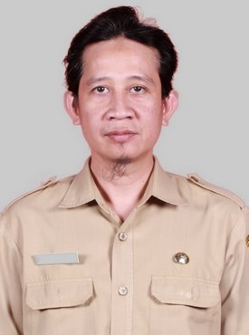
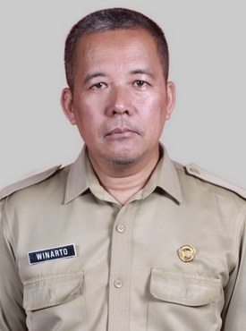

Tim Pengajar
Guru & Staf TJKT
Tenaga pendidik profesional dan bersertifikat di bidang jaringan & telekomunikasi.
Struktur
Kepala Jurusan

Erlitawanty M.Pd.
Kepala Jurusan TJKT
Pengajar
Daftar Guru TJKT

Ari Subagyo S.Kom.
Pengajar TKJ
Abdul Basith Panatagama Sujarwo Putra M.Pd.
Pengajar TKJ
Bayu Andi Sulistiya S.Pd.
Pengajar TKJ
Rustika Christiantari S.Pd.
Pengajar TKJ
Soepardi S.Pd.
Pengajar TKJ